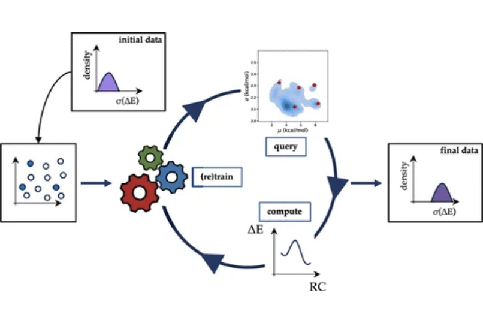
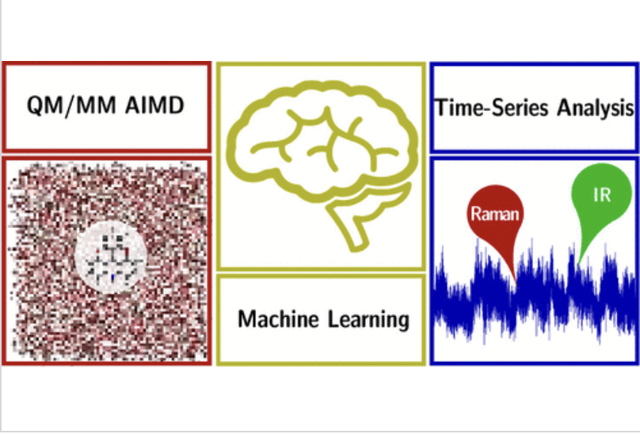
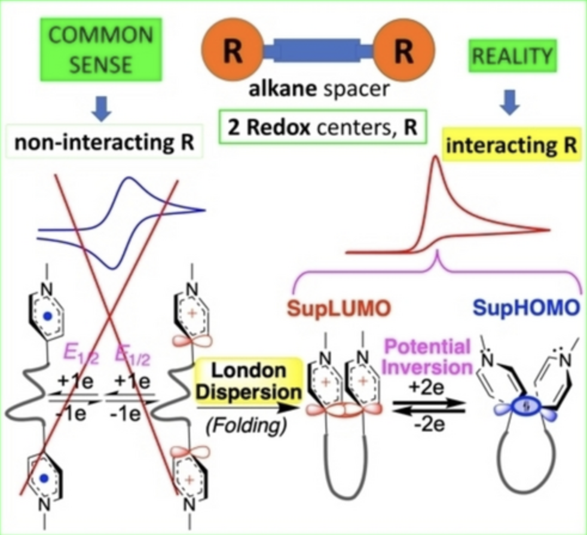
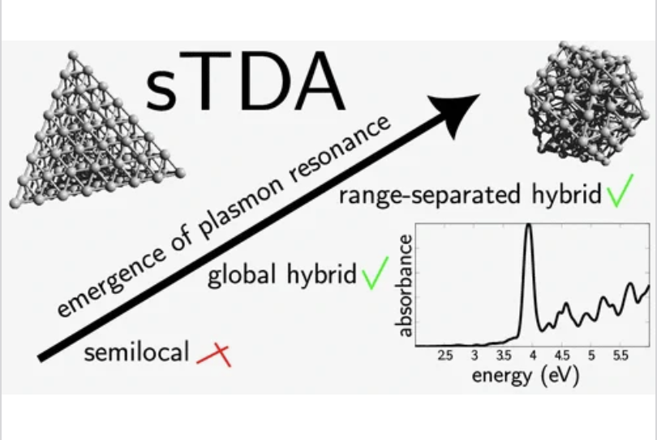
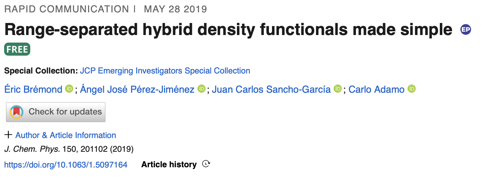

Éric Brémond
About Me
Since 2017, I have been an Assistant Professor at ITODYS laboratory, Department of Chemistry, Université Paris Cité , My research is centered on the development and application of density-functional theory (DFT) and time-dependent extension (TDDFT) for the accurate prediction of ground- and excited-state properties in complex real-life molecular systems.
In 2025, I obtained my Habilitation à Diriger des Recherches (HDR). I was subsequently appointed Junior Member of the Institut Universitaire de France (IUF) , effective October 2026.
Research Interests
- DFT Devlopments & ML
- Plasmonics
- Vibrational and Electronic Spectroscopies
- Molecular Chemistry: Reactivity, Electrochemistry
Teaching
-
 Plasm. & DFT Dev.
Approches de structure électronique pour la résonnance plasmonique de l'or nanométrique
Plasm. & DFT Dev.
Approches de structure électronique pour la résonnance plasmonique de l'or nanométrique
Selected Publications
-

DFT Dev.Improving the reliability of, and confidence in, DFT functional benchmarking through active learningJournal of Chemical Theory and Computation, 2025. -

Spectro.Boosting the Modeling of Infrared and Raman Spectra of Bulk Phase Chromophores with Machine LearningJournal of Chemical Theory and Computation, 2024. -

Mol. Chem.Angewandte Chemie International Edition, 2024. -

Plasm.The Journal of Physical Chemistry C, 2023. -

DFT Dev.